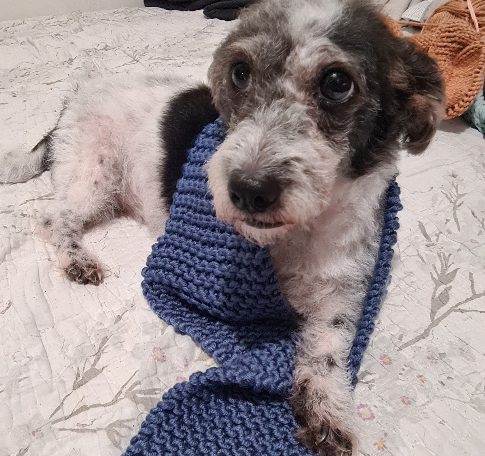

My Knitting Yarn Chart:
| YARN WEIGHT | NO.&Name | AKA | NEEDLE SIZE (US) | NEEDLE SIZE (METRIC) | KNITTING TENSION (GAUGE) |
|---|---|---|---|---|---|
| 2-3 PLY | 0: LACE | ULTRA FINE, LIGHT, FINGERING | (000-1) | 1.50 - 2.25mm | 27-32 sts |
| 4 PLY | 1: SUPER FINE | FINGERING, SOCK, BABY | (1-3) | 2.25 - 3.25mm | 23-26 sts |
| 5 PLY | 2: FINE | LIGHTWEIGHT, SPORT, BABY | (3-5) | 3.25 - 3.75mm | 22-25 sts |
| 8 PLY | 3: LIGHT | DK, LIGHT WORSTED | (5-7) | 3.75 - 4.50mm | 21-24 sts |
| 10 PLY | 4: MEDIUM | ARAN, WORSTED, AFGHAN | (7-9) | 4.50 - 5.5mm | 16-20 sts |
| 12 PLY | 5: BULKY | CHUNKY, CRAFT, RUG | (9-11) | 5.50 - 8.00mm | 12-15 sts |
| 14 PLY | 6: SUPER BULKY | SUPER CHUNKY | (11-17) | 8 - 12.75mm | 6-11 sts |
| 15+ PLY | 7: JUMBO | ROVING | (17+) | 12.75mm+ | 6 sts or less |
*This chart is used as a general guide for what needles to use with what yarn type and size.
Knitting is my therapy.
Entry: Nov 16, 2023
My sweat escape
I've picked up knitting early this year as to find a way to step away from technology. Over most of my life I've always been interested in technology and gaming. And so I've spent most of my life doing so. Knitting has become an escape and a new change for all that. To be able to create your own wear items and create beautiful pieces by hand has always surprised me everytime I'm done with a new piece.
Moss Stitch
.jpg)
New stitch!
Moss stitch is beautiful 4 row repeat pattern with a beautiful texture and stitch, great for making sweaters and dishcloths. This is my first try working on it and it has a beautiful pattern to it, and one of the best things I love about it is that it's reversable! Some knitting patterns are one sided such as the stockinette stitch, reversible stitches are just my favorite!
It's quite an easy pattern once you're used to the basics. You just need to switch between and purl and knit stitch:
Cast on multiples of 2:
- Row 1: *Knit 1, Purl 1
- Row 2: *Knit 1, Purl 1
- Row 3: *Purl 1, Knit 1
- Row 4: *Purl 1, Knit 1
My Knitting tools and Yarn types

Tools n' Things
Tools and accessories are just as important as anything when it comes to any hobby. As shown in the photos there are various typees of yarns that come in difference textures and sizes. My first knitting needles came in only 2 set of sizes, recently I've recieved a gift of a new knitting interchangable needle set.
An interchangable needle set comes with various circular wires and screws that can be used in various different projects. Compared to a normal straight needle where you are only as limited to creating straight projects.
Why knitting?
I see knitting as a form of therapy for me. Now a days technology has taken over most of our lives and sometimes, I feel like we're missing out on other things. Knitting has provided me an opening to step away from technology and the world, and just invest on my own time.
Patterns I've learned so far..
- GARTER STITCH
- STOCKINETTE STITCH
- DOUBLE STOCKINETTE STITCH
- 1x1 RIB STITCH
- 2x2 RIB STITCH
- SEED STITCH
- MOSS STITCH